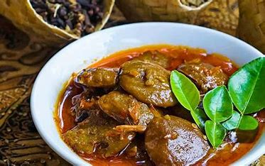

Soto Betawi
Lama masak: 50 menit
Hasil: 6 porsi

Resep :
- 500 g daging sapi bagian sandung lamur
- 200 g babat sapi
- 3 sdm kecap manis
- 3 cm kayu manis
- 1 sdt pala bubuk
- 4 butir cengkih
- 3 batang serai
- 5 lembar daun jeruk
- 2 cm lengkuas
Semur Jengkol
Lama masak: 2 Jam 30 Menit
Hasil : 6 porsi

Resep :
- 500 gram jengkol
- 1 buah tomat
- 4 cm kayu manis
- 2 lembar daun salam
- 6 sdm kecap manis
- ½ sdt bumbu kaldu
- 7 siung bawang merah
- 4 siung bawang putih
- 2 butir kemiri
Laksa Betawi
Lama masak: 1 Jam 15 Menit
Hasil : 5 porsi

Resep :
- 250 gram dada ayam
- 5 buah lontong
- 200 gram tauge
- 2 keping bihun jagung
- 2 butir telur rebus
- 5 buah cabai merah keriting
- 8 siung bawang merah
- 5 siung bawang putih